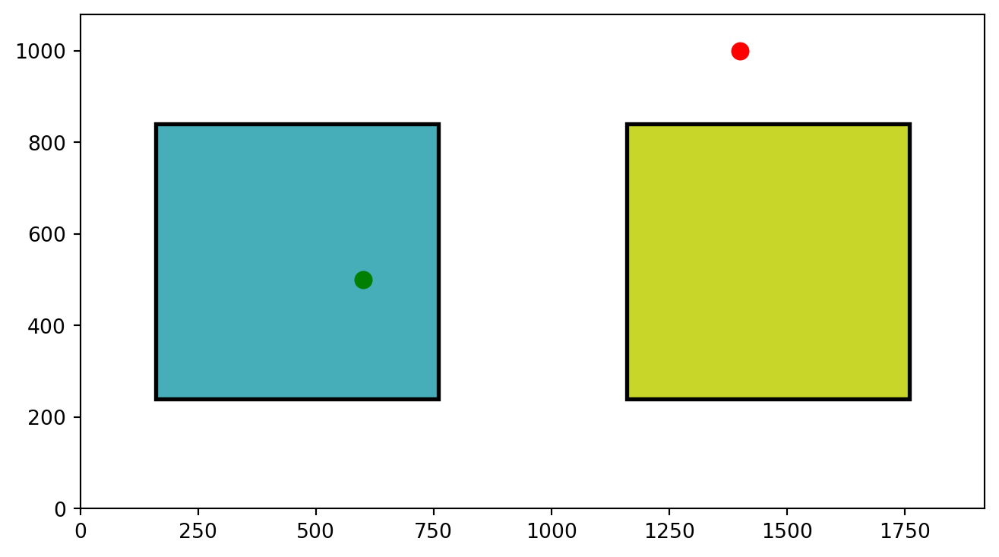
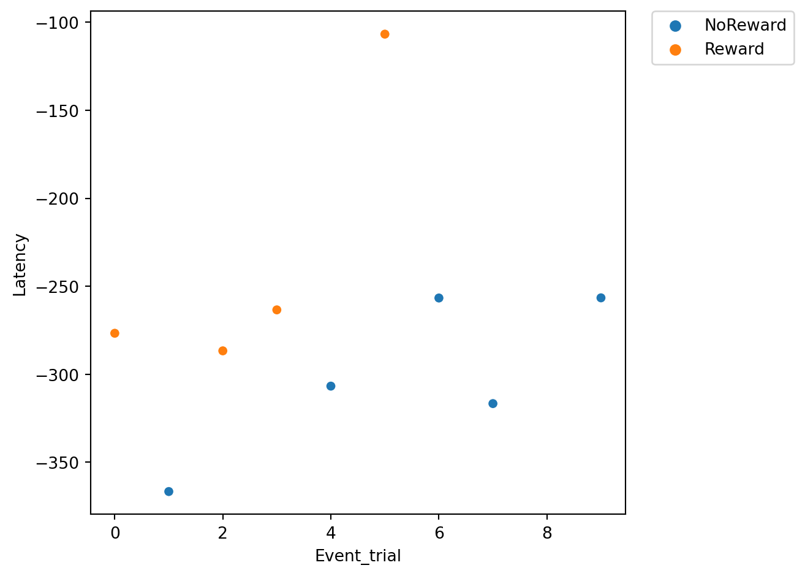
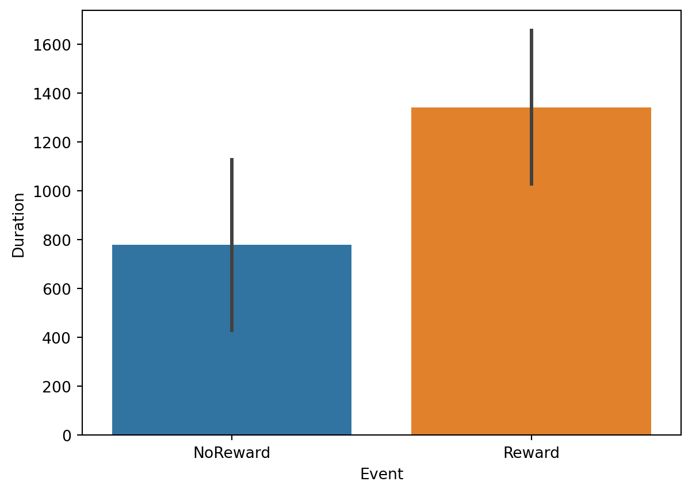

import os
import numpy as np
import pandas as pd
import matplotlib.pyplot as plt
import matplotlib.patches as patches
#%% Settings
# # Settign the working directory
os.chdir(r'C:\Users\tomma\OneDrive - Birkbeck, University of London\TomassoGhilardi\PersonalProj\BCCCD\Workshop')
# Screen resolution
screensize = (1920, 1080)
#%% Read and prepare data
# The fixation data extracted from I2MC
Fixations = pd.read_csv('DATA\\i2mc_output\\Adult1\Adult1.csv')
# The original RAW data
Raw_data = pd.read_csv('DATA\\RAW\\Adult1.csv')From fixations to measures
In the previous two tutorials we collected some eye-tracking data and then we used I2MC to extract the fixations from that data. Let’s load the data we recorded and pre-processed in the previous tutorial. We will import some libraries and read the raw data and the output from I2MC.
What can we do with just the raw data and the fixations? Not much I am afraid. But we can use these fixations to extract some more meaningful indexes.
In this tutorial, we will look at how to extract two variables from our paradigm:
Saccadic latency: how quickly our participant looked at the correct location. This includes checking whether the participant could anticipate the stimulus appearance. In our paradigm, we will look at how fast our participant looked at the target location (left: NoReward, right: Reward).
Looking time: how long our participant looked at certain locations on the screen. In our case, we will look at how long our participant looked at either target location (left: NoReward, right: Reward) on each trial.
So what do these two measures have in common? pregnant pause for you to answer EXACTLY!!! They are both clearly related to the position of our stimuli. For this reason, it is important to define Areas Of Interest (AOIs) on the screen (for example, the locations of the targets). Defining AOIs will allow us to check, for each single fixation, whether it happened in an area that we are interested in.
Areas Of Interest
Define AOIs
Let’s define AOIs. We will define two squares around the target locations. To do this, we can simply pass two coordinates for each AOI: the lower left corner and the upper right corner of an imaginary square.
An important point to understand is that tobii and Psychopy use two different coordinate systems:
Psychopy has its origin (0,0) in the centre of the window/screen by default.
Tobii reports data with its origin (0,0) in the lower left corner.
This inconsistency is not a problem per se, but we need to take it into account when defining the AOIs. Let’s try to define the AOIs:
# Screen resolution
screensize = (1920, 1080)
# Define the variable realted to AOIs and target position
dimension_of_AOI = 600/2 #the dimension of the AOIs, divided by 2
Target_position = 500 #the position of the targets relative to the centre (e.g., 500 pixels on the right from the centre)
# Create areas of intescreensizet
AOI1 =[[screensize[0]/2 - Target_position - dimension_of_AOI, screensize[1]/2-dimension_of_AOI], [screensize[0]/2 - Target_position + dimension_of_AOI, screensize[1]/2 + dimension_of_AOI]]
AOI2 =[[screensize[0]/2 + Target_position - dimension_of_AOI, screensize[1]/2-dimension_of_AOI], [screensize[0]/2 + Target_position + dimension_of_AOI, screensize[1]/2 + dimension_of_AOI]]
AOIs = [AOI1, AOI2]Nice!! This step is essential. We have created two AOIs. We will use them to define whether each fixation of our participant was within either of these two AOIs. Let’s get a better idea by just plotting these two AOIs and two random points (600, 500) and (1400,1000).
Code
import matplotlib.pyplot as plt
import matplotlib.patches as patches
# Create a figure
fig, ax = plt.subplots(1, figsize=(8,4.4))
# Set the limits of the plot
ax.set_xlim(0, 1920)
ax.set_ylim(0, 1080)
# Define the colors for the rectangles
colors = ['#46AEB9', '#C7D629']
# Create a rectangle for each area of interest and add it to the plot
for i, (bottom_left, top_right) in enumerate(AOIs):
width = top_right[0] - bottom_left[0]
height = top_right[1] - bottom_left[1]
rectangle = patches.Rectangle(bottom_left, width, height, linewidth=2, edgecolor='k', facecolor=colors[i])
ax.add_patch(rectangle)
ax.plot(600,500,marker='o', markersize=8, color='green')
ax.plot(1400,1000,marker='o', markersize=8, color='red')
# Show the plot
plt.show()
Points in AOIs
As you can see, we are plotting the two AOIs and two points. One falls into one of them and the other doesn’t. But how can we get Python to tell us if a point falls within one of our AOIs?
We can check whether the (x, y) coordinates of the point are within the x and y coordinates of the left bottom and top right corners of the AOI. So imagine we have a point: point and an area: area, we can check if the point falls inside the area by:
# Extract bottom left and top right points
bottom_left, top_right = area
# Extract the x and y of each point
bottom_x, bottom_y = bottom_left
top_x, top_y = top_right
# Extract the x and y of our point of interest
x, y = point
# Check if the point is in the area
bottom_x <= x <= top_x and bottom_y <= y <= top_yPerfect, this will return True if the point falls inside the area and False if it falls outside. Since we have two AOIs and not just one, we want to make things a bit fancier. We will create a function that checks if a point falls within a list of areas, and tells us which area it falls in.
We will run the code above in a loop using enumerate. This extracts two elements to our loop: the index of the element and the element itself. In our case the index of the area and the area itself. This is very useful as we can then use both of these two pieces of information. We will use the actual area to check if our points fall into it. Then, if it does, we will return the index of that area. Conversely, if the point doesn’t fall in any area the function will return -1.
# We define a function that simply takes the a point and a list of areas.
# This function checks in which area this point is and return the index
# of the area. If the point is in no area it returns -1
def find_area_for_point(point, areas):
for i, area in enumerate(areas):
# Extract bottom left and top right points
bottom_left, top_right = area
# Extract the x and y of each point
bottom_x, bottom_y = bottom_left
top_x, top_y = top_right
# Extract the x and y of our point of interest
x, y = point
# Check if the point is in the area
if bottom_x <= x <= top_x and bottom_y <= y <= top_y :
return(i)
return(-1)Now we have a cool function to check whether a point falls into any of our AOIs. We can use this function to filter the fixations that are in the AOIs: These are the only ones we care about.
Time Of Interest
Now that we’ve figured out how to select fixations that fall within our areas of interest, it’s time to consider another important factor: Time. Our experiment involves presenting a variety of stimuli, including fixation crosses, cues, and rewards. , we’re not interested in analyzing the entire experiment. Instead, we focus on specific events.
Let’s take a look at the design image. What we are interest in is the last part of the target presentation.

In this case, our attention is on the target window. We’re going to establish a time window that begins 750ms before the target appears and continues for 2000ms after its pentation. Indeed, both Saccadic latency and Lookign time occur within this time window, while we don’t really care about where the participant is looking during other phases of the task.
Let’s start by finding the moment in which the target appeared:
# Let's find the time we presented a reward or no reward
Targets = Raw_data.loc[(Raw_data['Event'] == 'Reward') | (Raw_data['Event'] == 'NoReward'), ['time', 'Event']].valuesHaving identified the moments when the targets were presented, we can now establish a time window around each of these instances. To accomplish this, we will iterate over the identified times and select all the fixations that occur within the defined window. To make things clearer, we’re going to add two new columns to our fixation dataframe: Event and Event_trial. These will help us know which event each fixation is linked to, and which specific trial it belongs to. Plus, we’re going to add another column called Onset to the fixations dataframe. This will let us store the onset times of specific events, making our analysis down the line a whole lot simpler.
# Find the fixations that we care about
pre = -750
post = 400
for i,c in enumerate(Targets):
# Find which row meets our conditions
mask = (Fixations['startT'] >= c[0]+pre) & (Fixations['startT'] < c[0]+post)
# Fill the rows with have found with more info
Fixations.loc[mask, 'Event'] = c[1]
Fixations.loc[mask, 'Event_trial'] = i
Fixations.loc[mask, 'Onset'] = c[0]Our Fixations dataframe is now chock-full of event-related info. But, there’s a catch. The fixations that took place at times other than during the target presentation are still hanging around in the dataframe. And they’re filled with NANs in the new columns we just created. We can use this to our advantage and filter all the NANs out:
# We can drop the NANs to have only the fixations that interest us!!!!
Target_fixations = Fixations[Fixations['Event'].notna()].reset_index(drop = True)Put things together
Now we have selected our fixations based on the events. But we also need to filter the fixations based on the AOIs. If only we had some functions to do so…. Oh wait, we actually just created them!! Let’s make use of them!!
As a first step, we will add a new column to our Target_fixations dataframe containing the AOIs we defined together before. Thus, each row of this column will tell us which AOIs we should check. We will also add a new column called Looked_AOI where we will store the indexes of which AOI the fixation fell into.
Important
Just a heads up: our study design is pretty straightforward with only two stable Areas of Interest (AOIs). But if you’re dealing with multiple or moving AOIs, you’ve got options. You can add them to each row of the dataframe, depending on the event or trial. This way, you get more control over which area to inspect at any given moment of the study. It’s all about flexibility and precision!
Target_fixations['AOIs'] = [AOIs]* len(Target_fixations)
Target_fixations['Looked_AOI'] = np.NANNow that we have a column with the AOIs in our Target_fixations dataframe, we can run our function find_area_for_point() to check in which AOI each fixation falls.
# We run the function for each row. We pass each xpos and ypos to the function
# toghether with the areas
for row in range(len(Target_fixations)):
Point = Target_fixations.loc[row, ['xpos', 'ypos']].values
Areas = Target_fixations.loc[row, 'AOIs']
Target_fixations.loc[row, 'Looked_AOI'] = find_area_for_point(Point, Areas)Perfect, we now have a dataframe that contains only the fixations of interest and tells us which AOI each fixation is in. Before we continue, let’s remove the fixations that didn’t fall in any AOI (if you remember or the function assigns -1 if the fixation is outside any AOI):
# Filter for AOI of interest
Target_fixations = Target_fixations[Target_fixations['Looked_AOI'] != -1]Saccadic latency
As I mentioned at the beginning of this tutorial, one of the indices we want to extract is saccadic latency. Basically, this indicates how quickly our participants fixated on the correct target location.
If we know where our participant was supposed to look, we can easily find the first fixation. Sounds simple, right?
In our paradigm, the non-rewarding stimulus was always presented on the left (the first AOI we defined) and the rewarding stimulus was always presented on the right (the second AOI we defined). Thus we can add this information to our dataframe and then use it to filter out the wrong fixations:
Now we can finally extract the saccadic latency by simply subtracting the onset of the event Onset from the onset of the fixations (startT):
Correct_Target_fixations['Latency'] = Correct_Target_fixations['Onset'] - Correct_Target_fixations['startT']Voilá!! as simple as this!!! Now our Latency column will contain the onset of the fixations in relation to the target presentation.
Note
Saccadic latency can be negative!!. This indicates that participants were able to predict the location of the stimulus and directed their gaze to it in anticipation. Typically, this is the primary use of saccadic latency - it serves as a tool to assess participants’ expectations in relation to our design.
First fixation
We have all these latency values, but we only want the first/fastest of each trial. How can we extract this information easily? We will use groupby. Groupby allows us to perform specific functions/commands on grouped sections of a data frame.
Here we will groupby by Events and Event_trials and for each of these grouped pieces of dataframe we will extract the smallest (min()) value of latency.
# We extract the first fixation of our dataframe for each event
SaccadicLatency = Correct_Target_fixations.groupby(['Event', 'Event_trial'])['Latency'].min().reset_index()Here we have our Saccadic latency!!!
Once our dataset is ready, we might want to visualise the data. For example, we can plot how saccadic latency changes across trials with seaborn:
import seaborn as sns # import seaborn
plt.figure()
# Scatterplot
ax = sns.scatterplot(data=SaccadicLatency, x="Event_trial", y="Latency", hue='Event')
# Place the legend
sns.move_legend(ax,loc="upper left")
# Show the plot
plt.show()
Looking time
While our paradigm was designed with saccadic latency in mind, for the purposes of this tutorial we will also be looking at the extraction of looking time. Looking time is a measure that tells us how much our participant was looking in either of the two AOIs at each trial.
We have already extracted all the information we need, we just need to do the final steps. We will again use groupby to group our dataframe by Event, Event_trial and Looked_AOI. For each of the grouped dataframes, we will extract the sum() of each fixation duration. This will tell us how much the participant looked at each of the two AOIs for each trial.
# Using groupby we can extract the sum of the duration of the fixation for each reward and trial
LookingTime = Target_fixations.groupby(['Event', 'Event_trial', 'Looked_AOI'], as_index=False)['dur'].sum()Again, we can now visualise the data. For example, we can plot whether looking time to rewarding vs. non-rewarding stimuli:
plt.figure()
# Barplot
ax = sns.barplot(data=LookingTime, x="Event", y="dur", hue='Event')
# Place the legend
sns.move_legend(ax,loc="upper center")
# Show the plot
plt.show()
END!!
Well done!! we have successfully extracted both saccadic latency and looking time from our data. Remember that it is just a simple tutorial based on an even simpler design. However, if you got to the end and you have understood all the steps and what they mean, I am sure you can apply this knowledge to your study as well. If you have any questions or if something is not clear, feel free to send us an email!!
Here below the entire script!!
import os
import numpy as np
import pandas as pd
import seaborn as sns
import matplotlib.pyplot as plt
import matplotlib.patches as patches
#%% Fucntions
# We define a function that simply takes the a point and a list of areas.
# This function checks in which area this point is and return the index
# of the area. If the point is in no area it returns -1
def find_area_for_point(point, areas):
for i, area in enumerate(areas):
# Extract bottom left and top right points
bottom_left, top_right = area
# Extract the x and y of each point
bottom_x, bottom_y = bottom_left
top_x, top_y = top_right
# Extract the x and y of our point of interest
x, y = point
# Check if the point is in the area
if bottom_x <= x <= top_x and bottom_y <= y <= top_y :
return(i)
return(-1)
#%% Settings and reading data
# Settign the working directory
os.chdir(r'C:\Users\tomma\OneDrive - Birkbeck, University of London\TomassoGhilardi\PersonalProj\BCCCD')
# Screen resolution
screensize = (1920, 1080)
# The fixation data extracted from I2MC
Fixations = pd.read_csv('DATA\\i2mc_output\\Test1\Test1.csv')
# The original RAW data
Raw_data = pd.read_csv('DATA\\RAW\\Test1.csv')
# Start Recording from 0 and in Seconds
Raw_data['time'] = Raw_data['time'] - Raw_data.loc[0,'time']
#%% Time of interest
# Let's find the time we presented a reward or no reward
Targets = Raw_data.loc[(Raw_data['Event'] == 'Reward') | (Raw_data['Event'] == 'NoReward'), ['time', 'Event']].values
# Find the fixations that we care about
pre = -750
post = 400
for i,c in enumerate(Targets):
# Find which row meets our conditions
mask = (Fixations['startT'] >= c[0]+pre) & (Fixations['startT'] < c[0]+post)
# Fill the rows with have found with more info
Fixations.loc[mask, 'Event'] = c[1]
Fixations.loc[mask, 'Event_trial'] = i
Fixations.loc[mask, 'Onset'] = c[0]
# We can drop the NANs to have only the fixations that interest us!!!!
Target_fixations = Fixations[Fixations['Event'].notna()].reset_index(drop = True)
#%% Put things together
# Add the AOIs to dataframe
Target_fixations['AOIs'] = [AOIs]* len(Latency_fixations)
Target_fixations['Looked_AOI'] = np.NAN
# We run the function for each row. We pass each xpos and ypos to the function
# toghether with the areas
for row in range(len(Target_fixations)):
Point = Target_fixations.loc[row, ['xpos', 'ypos']].values
Areas = Target_fixations.loc[row, 'AOIs']
Target_fixations.loc[row, 'Looked_AOI'] = find_area_for_point(Point, Areas)
# Filter for AOI of interest
Target_fixations = Target_fixations[Target_fixations['Looked_AOI'] != -1]
#%% Saccadic Latency
# We define which is the correct AOI that the participant should have looked at.
Target_fixations.loc[Target_fixations['Event'] == 'NoReward', 'Correct_Aoi'] = 0
Target_fixations.loc[Target_fixations['Event'] == 'Reward' , 'Correct_Aoi'] = 1
# We select only the correct fixations
Correct_Target_fixations = Target_fixations[Target_fixations['Correct_Aoi'] == Target_fixations['Looked_AOI']]
# Keep only the fixation to the correct AOI
Correct_Target_fixations['Latency'] = Correct_Target_fixations['Onset'] - Correct_Target_fixations['startT']
# We extract the first fixation of our dataframe for each event
SaccadicLatency = Correct_Target_fixations.groupby(['Event', 'Event_trial'])['Latency'].min().reset_index()
### PLOT
plt.figure()
# Scatterplot
ax = sns.scatterplot(data=SaccadicLatency, x="Event_trial", y="Latency", hue='Event')
# Place the legend
sns.move_legend(ax,loc="upper left")
# Show the plot
plt.show()
#%% Looking time
# Using groupby we can extract the sum of the duration of the fixation for each reward and trial
LookingTime = Target_fixations.groupby(['Event', 'Event_trial', 'Looked_AOI'], as_index=False)['dur'].sum()
### PLOT
plt.figure()
# Barplot
ax = sns.barplot(data=LookingTime, x="Event", y="dur", hue='Event')
# Place the legend
sns.move_legend(ax,loc="upper center")
# Show the plot
plt.show()